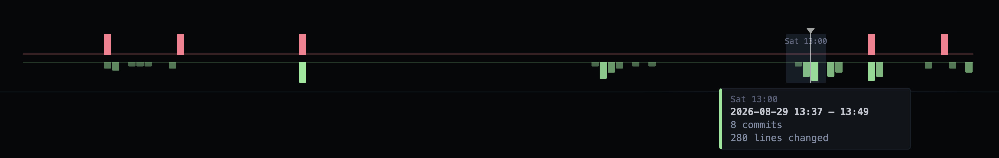
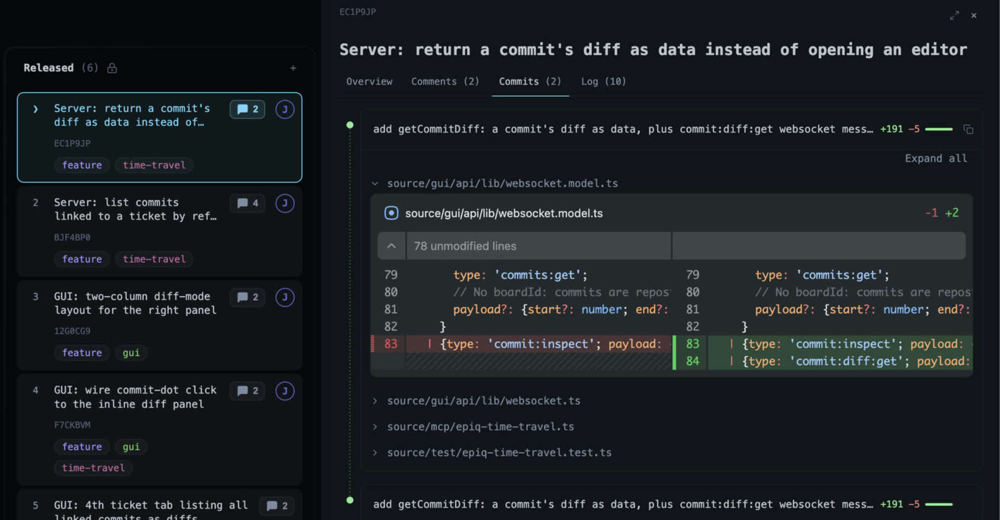

hjkl
Keyboard-centric
Navigate boards, issues, swimlanes, and contexts with vim-like movement. Or cheat with arrow keys. Or launch the browser app.
Issue tracking as code: Git-native, local-first, in your
terminal or browser.
Replay what your agents did while you were away,
and open the diff behind every ticket.
Agents now run whole sprints unattended. Scrub the timeline to find out what moved when, who moved it, and what changed along the way.

Multi agent workflows require powerful auditing. Epiq lets you stay informed in real time, or replay the logs after the fact.
Prefix a commit with the ticket's ref and it lands in the ticket's Commits tab: diffstat, per-file diff, and a comment box on any line.

Epiq originated as a command line tool and offers a first-class terminal experience. Auto-completions and a powerful command palette make for ergonomics.
Epiq optimizes for flow: keyboard navigation, command history, filters, autocompletion, and plain Git synchronization.
Navigate boards, issues, swimlanes, and contexts with vim-like movement. Or cheat with arrow keys. Or launch the browser app.
Epiq uses Git under the hood, with isolated worktrees and state branches, so teams can collaborate without another central service.
In an age where agents run whole sprints, ability to replay the board is increasingly important to stay in the loop. Inspect what happened 1h, 1 week, or one year ago.
Epiq takes its own path. Instead of a centralized, managed service, project state lives alongside your repository and travels with it.
Code, plan, review, retrospect issues without context-switching. Epiq keeps local interaction instant while allowing you to sync explicitly or automatically.
"Issue tracking should be smooth."
- probably someoneInstall the single binary then enter any Git repository and run Epiq. First launch opens an interactive setup wizard. Then either stay in your terminal or launch the browser GUI.
cd your-existing-repo-with-remote-tracking# open in terminal
epiq
# open in browser
epiq gui